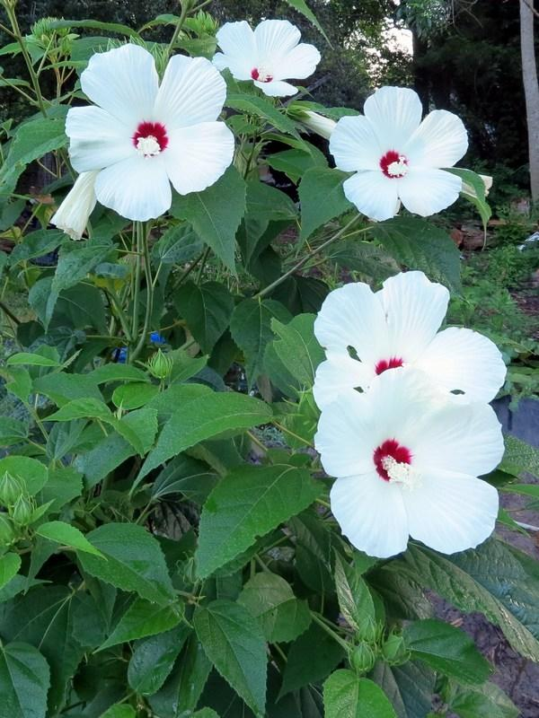
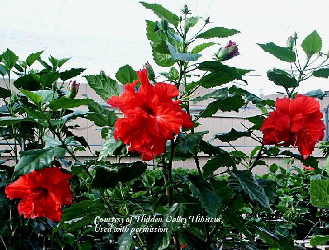
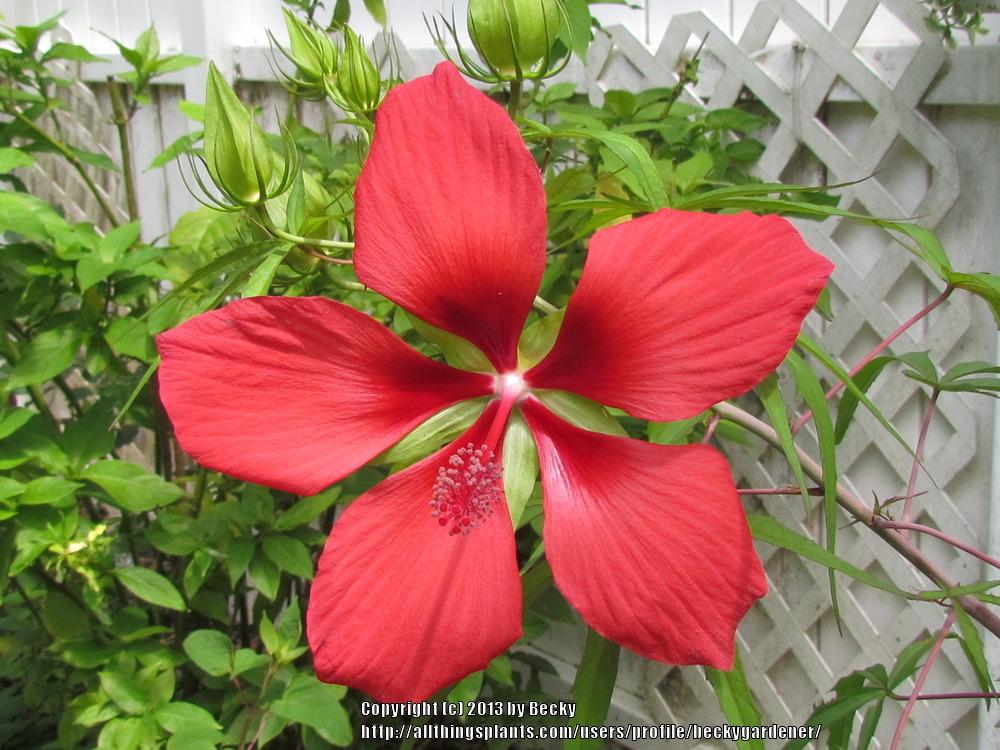
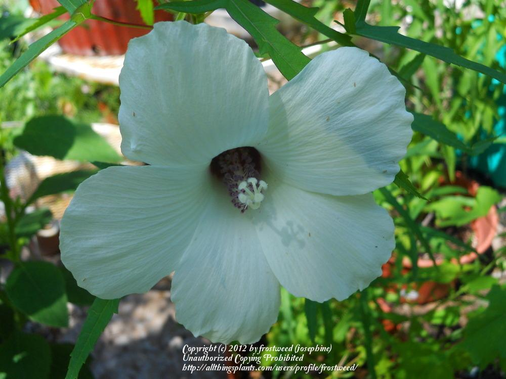

About Hibiscus Flowers
Hibiscus flowers are known for their large, colorful petals and tropical beauty.
They grow in warm climates and are often used in teas, decorations, and gardens.
Blooming
Florida and Texas each have the most hibiscus species in the continental U.S., making them the states where hibiscus flowers are most abundant and likely to bloom most frequently.
Florida: 13 species total, including 6 exotic species, and is home to rare endemics like Hibiscus poeppigii (found only in Miami-Dade County and the Florida Keys).


Texas: 13 species total, with 10 native species — the most native species of any state — and 4 endemic natives

